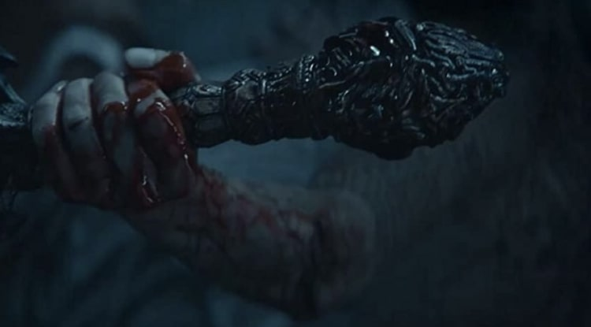
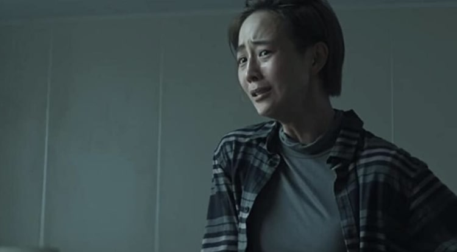

Transferencia de Almas netflix película es el nuevo thriller de suspenso, ciencia ficción en Netflix Taiwanes.
Transferencia de Almas es una adaptación de la galardonada novela del escritor de ciencia ficción Jiang B.
Está dirigida y escrita por Wei-Hao Cheng, y protagonizada por Chang Chen, Janine Chang y Christopher Lee.
La película en Netflix sigue a un fiscal y su esposa, mientras investigan la muerte de un empresario, desentrañan secretos ocultos y enfrentan su propio dilema de vida o muerte.
El reparto incluye a los actores Anke Sun, Lin Hui-min, Samuel Ku entre otros. La película de Netflix se estrenará a nivel mundial en Netflix el 14 de abril de 2021.
Transferencia de Almas Netflix Tráiler
Echa una mirada al tráiler a continuación y mira lo que llegó en abril a Netflix.
Informacion sacada de la pagina: Netfliteando.com